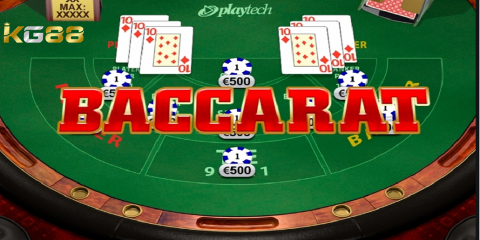
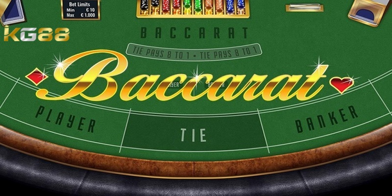
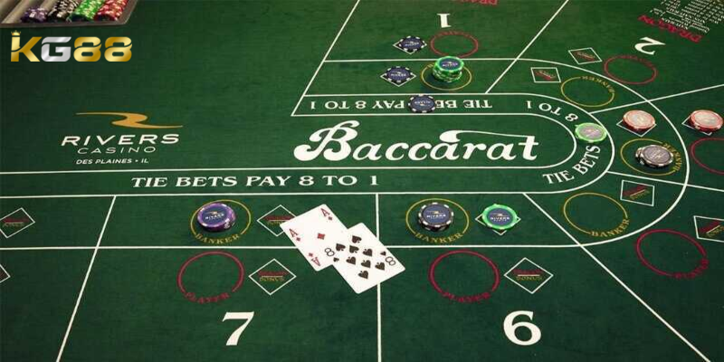
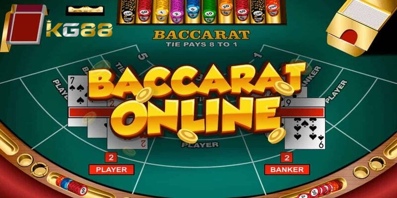

CASINO KG88
Tổng hợp mẹo chơi Baccarat hiệu quả rinh thưởng khủng 2024
POSTED ON THÁNG SÁU 26, 2024 BY ADMINKG88

Mẹo chơi Baccarat là gì? Rất nhiều tân binh mới gia nhập vẫn chưa bỏ túi được những kinh nghiệm chơi Baccarat hay? Bỏ túi những mẹo chơi game hay sẽ giúp anh em dễ dàng thắng lớn là gì? Hãy cùng KG88 chúng tôi đi tìm hiểu về vấn đề này trong bài viết dưới đây.
Giới thiệu về game bài Baccarat kịch tính
Trước khi đi vào tìm hiểu mẹo chơi Baccarat hãy cùng tìm hiểu đôi nét về trò chơi. Baccarat là một trong những game đánh bài được nhiều hội viên yêu thích và lựa chọn tham gia cá độ. Trò chơi này còn được gọi với cái tên khác là table game và sử dụng bộ bài tây gồm 52 lá. Người chơi được tính thắng thua dựa vào số điểm giành được trên lá bài.

Giới thiệu đôi nét về game bài Baccarat hấp dẫn
Bộ môn Baccarat có rất nhiều thể loại khác nhau để anh em thoải mái lựa chọn tham gia trải nghiệm như: Roulette, Blackjack, Sicbo, xì dách… Mỗi trò chơi đều có cách chơi và luật cá cược cực đơn giản đặc biệt tỷ lệ tiền thưởng rất cao từ đó, giúp người chơi làm giàu nhanh chóng.
Về cơ bản, trò chơi này đã xuất hiện từ rất sớm vào những năm 1950 và trở thành một bộ môn không thể thiếu tại các sòng bạc. Anh em có thể mang về hàng trăm triệu đồng khi tham gia cá cược game Baccarat. Vì vậy, bet thủ hãy nhanh tay đăng ký tài khoản Fun88 để cá độ liền tay rinh ngay quà khủng.
Cách tính điểm trong game baccarat
Trong ván bài người chơi có thể rút thêm một lá bài nữa nếu tổng điểm của hai lá bài đầu tiên là 0 đến 5. Tuy nhiên, nhà cái chỉ rút thêm một lá nếu tổng điểm của hai lá bài đầu tiên của họ là 0 đến 2.

Mẹo chơi Baccarat và cách tính điểm
Điểm số trong cách chơi baccarat được tính bằng cách cộng các điểm của từng lá bài lại với nhau. Lá bài J, Q và K có giá trị là 0, còn các lá bài từ 2 đến 9 có giá trị tương ứng với số điểm trên lá bài đó. Lá bài 10 và Á có giá trị là 0 và 1 điểm tương ứng.
Đối với cược vào người chơi, người chơi sẽ thắng nếu tổng điểm của những lá bài mà họ cược bằng hoặc lớn hơn tổng điểm của casino KG88. Tuy nhiên, nếu tổng điểm của những lá bài mà người chơi cược vượt quá 9, thì chỉ số hàng đơn vị sẽ được tính.
Tỷ lệ trả thưởng game bài Baccarat
Ngoài nắm chắc luật chơi mẹo chơi Baccarat cũng rất quan trọng. Người chơi có nhiều lựa chọn kèo cược và tỷ lệ trả thưởng khác nhau. Một trong những kèo cược phổ biến nhất là kèo Banker với tỷ lệ trả thưởng là 1:1. Nếu người chơi chọn kèo Player, tỷ lệ trả thưởng cũng là 1:1. Nếu hai bên cùng có điểm số bằng nhau, kèo Tie được áp dụng với tỷ lệ trả thưởng lên tới 8:1.
Ngoài ra, người chơi cũng có thể đặt cược vào kèo Perfect Pair (2 lá bài giống nhau), kèo Either Pair (2 lá bài giống nhau bất kỳ), kèo Big (tổng điểm lớn hơn hoặc bằng 5) và kèo Small (tổng điểm nhỏ hơn hoặc bằng 4). Mỗi kèo cược sẽ có tỷ lệ trả thưởng khác nhau, tuy nhiên, vẫn giữ nguyên tính công bằng và số tiền thắng được tính chính xác và nhanh chóng. Để có trải nghiệm chơi baccarat thú vị và hiệu quả cao, người chơi cần phải hiểu rõ về các kèo cược và tỷ lệ trả thưởng.
Top mẹo chơi Baccarat mang đến hiệu quả cao
Tiếp nối bài viết, chúng ta sẽ cùng tìm hiểu những mẹo chơi game baccarat luôn thắng. Hãy cùng khám phá cách chơi baccarat tuyệt đỉnh sau nhé.

Một số mẹo chơi Baccarat chắc thắng
Nắm rõ trong lòng bàn tay bài baccarat
Mẹo chơi Baccarat hiệu quả nhất đó là người chơi phải hiểu và nắm vững quy tắc của trò này. Thông thường, người thắng trong trò chơi này là người có tổng điểm gần với con số 9. Tuy nhiên, nếu tổng điểm của người chơi và nhà cái là giống nhau, thì trò chơi sẽ được giải quyết bằng cách bốc thêm lá bài.
Mẹo chơi Baccarat chọn cách đặt cược khoa học
Một trong số những cách chơi baccarat là anh em cần phải chọn cách đặt cược phù hợp với mình và trò chơi. Nếu anh em là một người yêu thích tỉ lệ cược cao, đặt cược cho người chơi có cơ hội thắng cao hơn. Tuy nhiên, nếu cược thủ muốn giảm thiểu rủi ro thì đặt cược cho nhà cái có thể là một lựa chọn tốt hơn.
Mẹo chơi Baccarat hay quản lý tài chính thông minh
Cuối cùng, một cách chơi baccarat hiệu quả là người chơi cần phải quản lý tài chính thông minh. Với một trò chơi đánh bài, việc quản lý tài chính là điều quan trọng để giúp người chơi tránh rủi ro, đồng thời duy trì được mức độ tiền thưởng của mình.
Bài viết trên đã hướng dẫn cách chơi Baccarat chi tiết, hiệu quả và dễ chiến thắng nhất. Hy vọng, qua đây sẽ giúp anh em học hỏi thêm được nhiều kiến thức cũng như chiến thuật chơi bài Baccarat bách phát bách trúng. Tuy nhiên, anh em phải biết chơi đúng lúc, dừng đúng thời điểm đây mới chính là yếu tố quyết định thắng thua khi chơi bài Baccarat.
Xem thêm: Tool Hack Baccarat – Top Phần Mềm Được Đánh Giá Cao
BÀI VIẾT MỚI